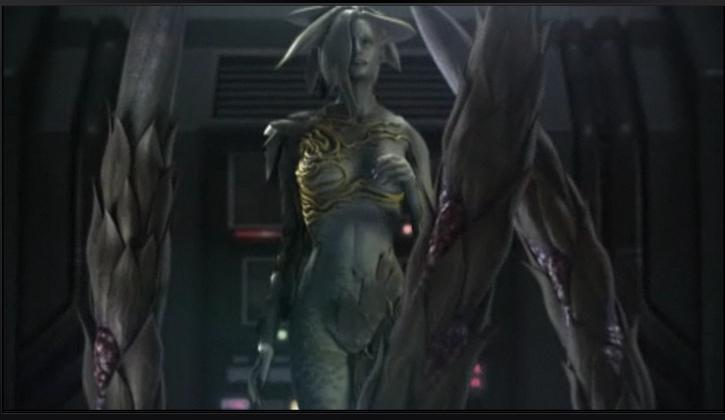

Umbrella Corp.'s Experimental Bio-Weaponry

- Status Report of Bio-Weapon: Tyrant Veronica Virus
- Briefiing:The basis of t-Veronica research came with the discovery of a retrovirus existing within the genome of some ant queens. Alexia mistook the eusocial nature of an ant colony for one with complete adoration for their "queen", and likened it to her own megalomaniac lifestyle personality. She then began considering the possibility of merging the genome of this virus with that of the Progenitor virus.
- Transmittance:Injection
- Symptoms:Carla later combined T-02 with the G-Virus variant found in Sherry Birkin's body. The resulting pathogen - the C-Virus - combined the greatest elements of t-Veronica and G, transforming its victims into intelligent, extremely dangerous creatures.
- Incubation Period:Unlike t-Veronica, T-02 did not degenerate its hosts' mental faculties, removing the need for lengthy incubation periods (as with Alexia) or constant organ transplants (as Javier would do for Manuela) to keep the virus stable.
- Effects:As with many variants of the Progenitor virus, the mutations induced by the t-Veronica virus are largely dependent on the mindset of its host.